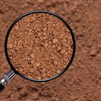
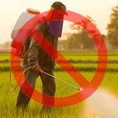

Introduction
Briefly descriptions about Organic Gardening
What is Organic Gardening?
Organic gardening has been described as several things: chemical-free gardening, Earth-friendly gardening, natural gardening are just a few. And it is all of these things, but these phrases tend to be so ambiguous they end up causing confusion. For example, “chemical-free gardening” is a total misnomer, because whether you are using organic or synthetic fertilizers and pesticides in your garden, they are all “chemicals.” “Natural gardening” espouses images of weeds run rampant and hornworm-infested tomato plants.
History of Organic Gardening
Traditional or natural farming without using synthetic chemicals was the original type of agriculture, and has been practiced for thousands of years. After the industrial revolution had introduced inorganic methods, most of which were not well developed and had serious side effects. An organic movement began in the 1940s as a reaction to agriculture's growing reliance on synthetic fertilizers and pesticides. The history of this modern revival of organic farming dates back to the first half of the 20th century at a time when there was a growing reliance on these new synthetic, non-organic methods.
Pros and Cons
Pros
- It’s healthy
- It’s eco-friendly
- Healthier soil and happier you
- Everything has a place and purpose
Cons
- Economic concerns
- Pest and weed problems
- Achieving a balance of nutrientsy
Organic Gardening Topics
Based on class's Lectures

Historical Perspectives
History of Organic Gardening
Plant growth and Factors affecting it
Principles of growth and Plant nutrition
Agricultural technology
Technology for organic gardening
The role of organic matter and Soil
Organic matter and Soil management
Plant-microbe Interaction
Something too small to be seen by naked eyes
Organic Fertilizer
Manures | Compost | Commercial fertilizers
Organic and Chemical gardening
Comparison between organic and chemical gardening
Plant disease management
Reduction the economic and aesthetic damage caused by plant diseases
Benefits of organic gardening
WHY ORGANIC?
Postharvest management
Stage of Crop production
Certification and marketing
Certification and marketing of organic production
Approach
Principles of Organic Gardening.
-

1. Build and maintain
soil health
The soil is full of life, which supports healthy plant growth.
-

2. Encourage biodiversity
Different life forms such as plants, insects, birds and mammals all have a role in creating a resilient growing system.
-
3. Use resources responsibly
The organic grower uses resources sustainably, with minimum
damage to the planet. -

4. Avoid using harmful chemicals
Toxic chemicals used to kill weeds, diseases and pests can damage the health of your growing area, and all the life-forms within and beyond it.
-
5. Maintain a healthy growing area
Keeping your growing area in good health, rather than just pest and disease free, is at the heart of organic growing. A diverse and vigorous growing system, good hygiene, and close observation all help prevent problems.
-

Our Amazing Team
Organic Gardening
[ 2305151 ]
...
Jatuwat Sa-ngiampak
ID : 5931216621
Web Designer
Front-end web developer
Chutipon Hirankanokkul
ID : 5931239021
Web Developer
Back-end web developer
Yanisa Sunthornyotin
ID : 5931243521
Senior Advisor
Quality Control Manager
Kachamas Techapichetvanich
ID : 5931201121
Historical Perspectives
Plant Growth and factors affecting it
Sirada Janjaochay
ID : 5931357421
Agricultural technology
The role of organic matter
Kanokporn Vasiksiri
ID : 5931203421
Organic fertilizer
Organic and chemical gardening
Sojirath thunprateep
ID : 5931365421
Plant disease management
Benefits of organic gardening
Sawarin Sriyathep
ID : 5931372821
Soil organic matter management
Plant-microbe interaction

Jirat Jarutas
ID : 5931222321
Postharvest management
Presentation speaker
Anon Pongsawang
ID : 5931389521
Certification and marketing of
organic produces
Presentation speaker
Faculty of Engineering Chulalongkorn University
International School of Engineering